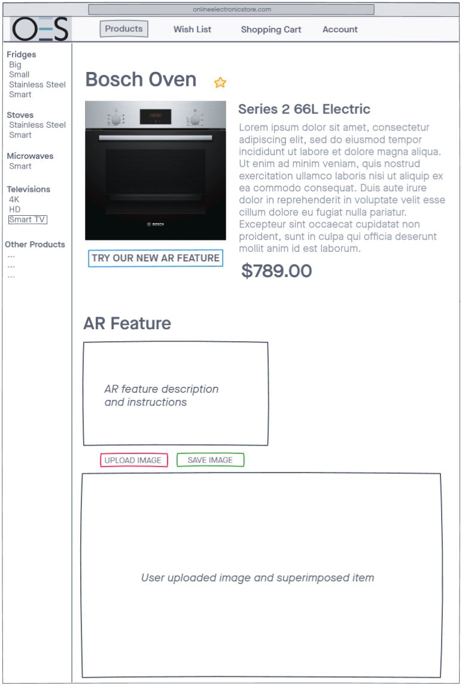

Wish List - MVF 2 for OES website
Team member in charge of MVF – Marcus Lew
MVF description and low fidelity mock-up
The purpose of the wish list is to allow users to bookmark their favourite items in our product range, and to easily access those bookmarks in a central location. We found this feature would add to the user experience by eliminating the need for them to remember what products they like, or having to search the product list again for the items they like.
A low fidelity mock-up was first established to set the groundwork for later improvement. The following low fidelity mock-up includes the key features of a wish list page, and an idea of the overall page layout.
As shown by the low fidelity mock-up, a grid layout was chosen to give generous spacing between the content to avoid clutter. Each cell allows enough spacing for the key product information to be displayed so the user is able to quickly glance and recognise the products in the wish list.
System context diagram and high-fidelity mockups
There are several things to consider in terms of developing the wish list. Two major external factors is how the wish list will need to interact with our product database and customer accounts. The product database is vital as the wish list will need to pull product information from that database and display it to the user. This includes the product image, name, description, price, and product type. Also, in order for a wish list to be saved so that users will be able to access them some other time, they will be tied to our customer accounts. Upon customer account login, users will be able to access their unique wish list and see any products they have bookmarked whilst logged in.
Another feature to be considered is wish list filters. This allows the user to apply filters that will change the visual categorisation of the items in the wish list. This will be particularly useful if the user wishes to see the items displayed in a certain order, for example, ordered by price, or mostly recently added.
These features are represented in the following system context diagram, which describes the relationship between the wish list, and the different factors and features at play.
High fidelity mockups were then constructed to further establish and build upon the ideas presented in the low fidelity mockups as shown.
User stories
User story 1 – Jess
Scenario: Jess is looking to purchase a new fridge within the next few months as her old one is too small. She is browsing the OES store for fridges with a limited budget but is open minded to any brands. Currently unsure of what she wants, she is happy to browse for options before making a final decision. She wants to use the wish list within OES to bookmark any potential fridges she might buy.
Acceptance criteria:
Jess wants to browse the OES product pages for fridges.
She wishes to be able to add items in a wish list for comparison.
She wants the ability to sort the items from lowest cost to highest cost.
Once she has made her decision, she wishes to be able to remove all other fridge products in her wish list.
User story 2 – Tim
Scenario: Tim is moving into a new apartment and is looking to purchase a new television for his bedroom. He is in no rush to buy one as he already has one in the living room. He is aware of a new 8K smart TV being released in the near future and is waiting for the price release. In the meantime, Tim wants to browse the OES catalogue and take note of any potential TVs he might buy in future if the new TV turns out to be too expensive.
Acceptance criteria:
Tim wishes to browse the OES product pages for televisions.
He wants all his favourite items listed in one easily accessible area.
He wants to sort his items in terms of most recently added.
Tim wants the items in the wish list to stay there until he makes a purchase decision once the new TV releases.
Prototype
Considering the user stories, high fidelity mockups and the system context diagram developed, a prototype was then created to showcase the different features that will be implemented into the final build of the wish list.
Link to OES Wish List Prototype
Prototype images:
Showcasing the filter most recently being applied
Showcasing the wish list being filtered alphabetically

Showcasing the wish list being filtered from highest to lowest price
Showcasing the wish list being filtered from lowest to highest price
Displaying when an item is unstarred when in the wish list
Displaying when an item has been starred within the product page
Displaying when an item is unstarred within the product page
Displaying when the oven item was removed from the wish list once unstarred